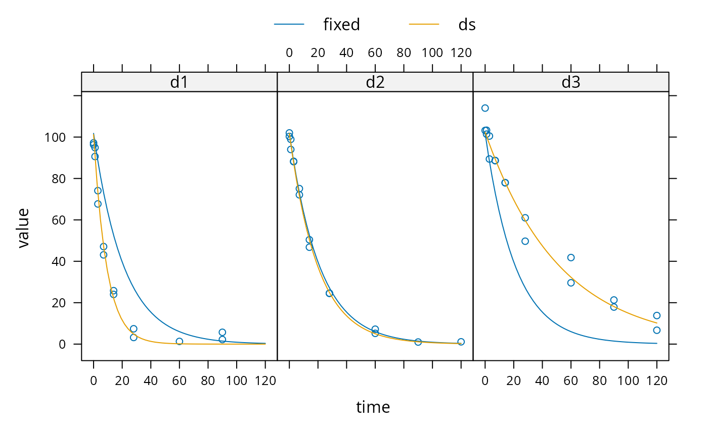

nlme.RdThese functions facilitate setting up a nonlinear mixed effects model for an mmkin row object. An mmkin row object is essentially a list of mkinfit objects that have been obtained by fitting the same model to a list of datasets.
nlme_function(object) mean_degparms(object, random = FALSE) nlme_data(object)
| object | An mmkin row object containing several fits of the same model to different datasets |
|---|---|
| random | Should a list with fixed and random effects be returned? |
A function that can be used with nlme
If random is FALSE (default), a named vector containing mean values of the fitted degradation model parameters. If random is TRUE, a list with fixed and random effects, in the format required by the start argument of nlme for the case of a single grouping variable ds?
A groupedData object
sampling_times = c(0, 1, 3, 7, 14, 28, 60, 90, 120) m_SFO <- mkinmod(parent = mkinsub("SFO")) d_SFO_1 <- mkinpredict(m_SFO, c(k_parent_sink = 0.1), c(parent = 98), sampling_times) d_SFO_1_long <- mkin_wide_to_long(d_SFO_1, time = "time") d_SFO_2 <- mkinpredict(m_SFO, c(k_parent_sink = 0.05), c(parent = 102), sampling_times) d_SFO_2_long <- mkin_wide_to_long(d_SFO_2, time = "time") d_SFO_3 <- mkinpredict(m_SFO, c(k_parent_sink = 0.02), c(parent = 103), sampling_times) d_SFO_3_long <- mkin_wide_to_long(d_SFO_3, time = "time") d1 <- add_err(d_SFO_1, function(value) 3, n = 1) d2 <- add_err(d_SFO_2, function(value) 2, n = 1) d3 <- add_err(d_SFO_3, function(value) 4, n = 1) ds <- c(d1 = d1, d2 = d2, d3 = d3) f <- mmkin("SFO", ds, cores = 1, quiet = TRUE) mean_dp <- mean_degparms(f) grouped_data <- nlme_data(f) nlme_f <- nlme_function(f) # These assignments are necessary for these objects to be # visible to nlme and augPred when evaluation is done by # pkgdown to generated the html docs. assign("nlme_f", nlme_f, globalenv()) assign("grouped_data", grouped_data, globalenv()) library(nlme) m_nlme <- nlme(value ~ nlme_f(name, time, parent_0, log_k_parent_sink), data = grouped_data, fixed = parent_0 + log_k_parent_sink ~ 1, random = pdDiag(parent_0 + log_k_parent_sink ~ 1), start = mean_dp) summary(m_nlme)#> Nonlinear mixed-effects model fit by maximum likelihood #> Model: value ~ nlme_f(name, time, parent_0, log_k_parent_sink) #> Data: grouped_data #> AIC BIC logLik #> 298.2781 307.7372 -144.1391 #> #> Random effects: #> Formula: list(parent_0 ~ 1, log_k_parent_sink ~ 1) #> Level: ds #> Structure: Diagonal #> parent_0 log_k_parent_sink Residual #> StdDev: 0.9374733 0.7098105 3.83543 #> #> Fixed effects: parent_0 + log_k_parent_sink ~ 1 #> Value Std.Error DF t-value p-value #> parent_0 101.76838 1.1445444 45 88.91606 0 #> log_k_parent_sink -3.05444 0.4195622 45 -7.28008 0 #> Correlation: #> prnt_0 #> log_k_parent_sink 0.034 #> #> Standardized Within-Group Residuals: #> Min Q1 Med Q3 Max #> -2.6169360 -0.2185329 0.0574070 0.5720937 3.0459868 #> #> Number of Observations: 49 #> Number of Groups: 3# augPred does not seem to work on fits with more than one state # variable